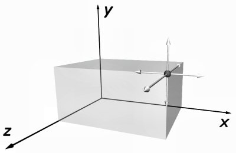
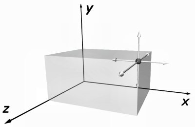
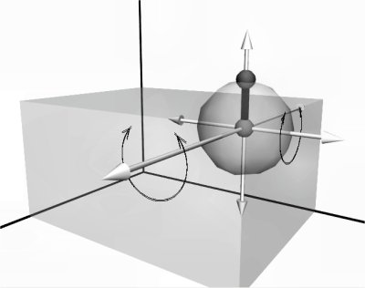
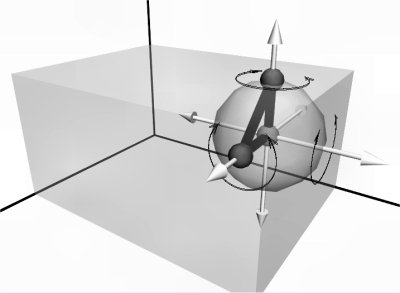
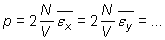
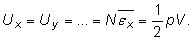

Energia internă a gazului ideal este energia cinetică totală
de agitaţie termică a particulelor gazului.
Energia internă a gazului ideal este energia cinetică totală
de agitaţie termică a particulelor gazului.
Elemente de termodinamică. |
Transformări simple ale gazului ideal |
E-2. |
Energia internă a gazului ideal |
În modelul gazului ideal, neglijăm cu totul forţele intermoleculare, astfel că neglijăm orice energie potenţială datorată forţelor intermoleculare.
Energia internă a gazului ideal este energia cinetică totală
de agitaţie termică a particulelor gazului.
O particulă poate "stoca" energie cinetică în mai multe moduri − fiecărui parametru al poziţiei particulei care se poate modifica independent în timp i se poate asocia o energie cinetică.
Numim grad de libertate al unei particule oricare parametru
care caracterizează poziţia particulei şi care se poate modifica independent în timp.
O particulă punctiformă (moleculă monoatomică) are trei grade de libertate: poate efectua mişcări de translaţie cu trei componente independente, de−a lungul celor trei axe de coordonate. Este necesară cunoaşterea a trei coordonate x, y şi z pentru precizarea poziţiei particulei (figura 2−1)
 

Figura 2-1. O moleculă monoatomică are trei grade de libertate, toate de translaţie.
O moleculă diatomică (asemenea unei haltere având lungimea fixă) are cinci grade de libertate − este necesară cunoaşterea a cinci dintre cele şase coordonate care precizează poziţiile celor doi atomi (figura 2−2).

Figura 2-2. O moleculă diatomică are cinci grade de libertate: trei de translaţie şi
două de rotaţie.
Una dintre cele şase coordonate depinde de celelalte (poate fi obţinută din relaţia care exprimă distanţa fixă dintre cei doi atomi).
"Fixând" unul dintre cei doi atomi (precizând coordonatele acestuia), molecula încă se mai poate mişca, rotindu−se în jurul atomului "fixat". Celălalt atom descrie suprafaţa unei sfere (distanţa dintre cei doi atomi este fixă). Sunt necesare două coordonate (longitudine şi latitudine) pentru precizarea poziţiei pe o sferă. Aşadar, o moleculă diatomică are cinci grade de libertate: trei de translaţie şi două de rotaţie.
Mişcările unei molecule poliatomice pot fi foarte complexe: translaţii, rotaţii, dar şi vibraţii şi deformări.
În cazul unei molecule "rigide", având cel puţin trei atomi necoliniari, numărul gradelor de libertate este şase (figura 2−3).

Figura 2-3. O moleculă poliatomică "rigidă" cu atomi necoliniari are şase grade de
libertate: trei de translaţie şi trei de rotaţie.
Precizarea poziţiei a trei atomi necoliniari necesită precizarea a nouă coordonate. Dacă molecula este rigidă, pot fi scrise trei relaţii de distanţă − rămân astfel şase parametri independenţi.
Prin numeroase ciocniri, energia internă a gazului ideal se repartizează egal pentru fiecare grad de libertate (echipartiţia energiei):
Fiecărui grad de libertate al particulelor gazului ideal îi
corespunde aceeaşi energie cinetică medie:
Astfel, expresia presiunii gazului ideal poate fi scrisă indiferent care este gradul de libertate implicat:
|  | (1) |
Astfel, energia internă a gazului ideal corespunzătoare fiecărui grad de libertate al particulelor sale este:
|  | (2) |
Aşadar,
Gazul ideal ale cărui molecule au i grade de libertate are
energia internă:
 Provocarea 2-1
Provocarea 2-1
Considerând aerul gaz ideal cu molecule diatomice, cât este energia internă a aerul din încăperea în care te afli?
Câtă apă cu temperatura iniţială 10°C ar putea fi adusă la fierbere cu această cantitate de energie?